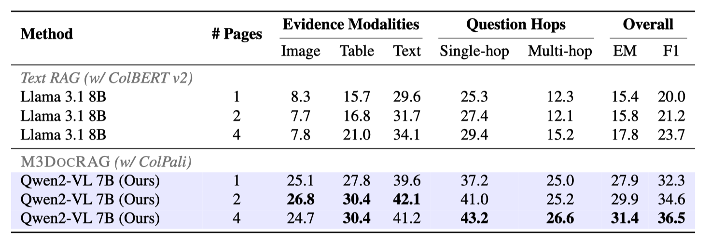
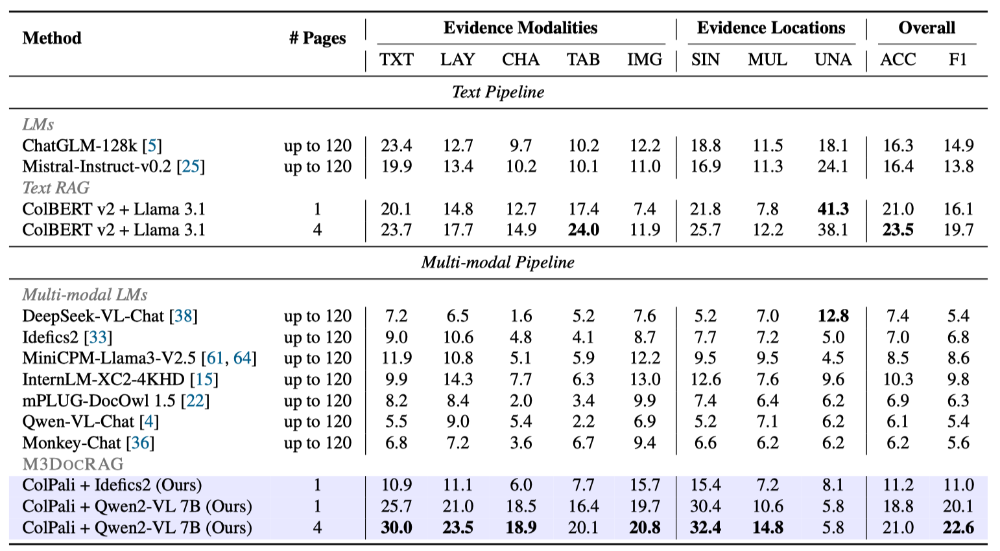
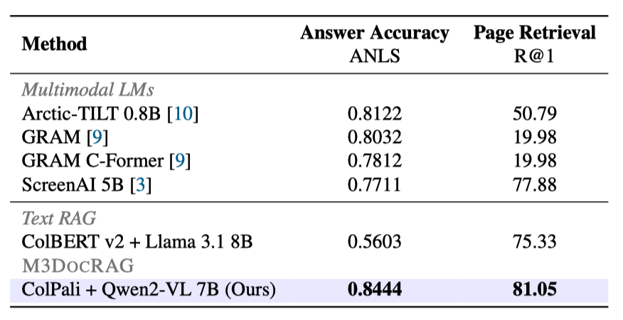

Evaluation Results
We benchmark M3DocRAG on three PDF document understanding datasets that represent different scenarios:
- M3DocVQA (Open-domain VQA with multi-hop questions across multiple documents)
- MMLongBench-Doc (Closed-domain VQA with multi-hop questions across a single document)
- MP-DocVQA (Closed-domain VQA with single-hop questions across a single document)
Evaluation on Open-domain DocVQA: M3DocVQA
We observe that our M3DocRAG (ColPali + Qwen2-VL 7B) significantly outperforms text RAG (ColBERT v2 + Llama 3.1 8B),
across
all different evidence modalities / question hops / # pages. The performance gap is especially big when the evidence
involves images, underscoring that M3DocRAG addresses the information loss over non-textual content by text-only
pipelines. We also notice that providing more retrieved pages as context generally increase the performance of both
textRAG and M3DocRAG.

Open-domain DocVQA evaluation results on M3DocVQA. The scores are based on F1, unless otherwise noted. Index:
FlatIP + IVFFlat.
Evaluation on Closed-domain DocVQA: MMLongBench-Doc
In MMLongBench-Doc, the models need to handle even longer PDF documents (up to 120 pages) than in MP-DocVQA (up to 20
pages).
Table shows that ColPali + Idefics2 surpass Idefics2 without RAG, as well as all previous multi-modal entries.
ColPali + Qwen2VL 7B achieves the best scores in overall F1 and most evidence modality/page settings. This demonstrates
the effectiveness of multi-modal retrieval over handling many pages by concatenating low-resolution images.

Closed-domain DocVQA evaluation results on MMLongBench-Doc. We report the generalized accuracy (ACC) across
five evidence source modalities: text (TXT), layout (LAY), chart (CHA), table (TAB), and image (IMG), and three evidence
locations: singlepage (SIN), cross-page (MUL), and unanswerable (UNA). The scores from non-RAG methods are from
Ma et
al.
Evaluation on Closed-domain DocVQA: MP-DocVQA
While the text RAG pipeline (ColBERT v2 + Llama 3.1) falls short compared to existing approaches, all multi-modal RAG
pipelines outperform their text-based counterpart. Notably, the M3DocRAG pipeline (ColPali + Qwen2-VL 7B) delivers the
state-of-the-art results on MP-DocVQA.

Closed-domain DocVQA evaluation results on MP-DocVQA. The RAG methods retrieve a single page to the downstream
QA models.